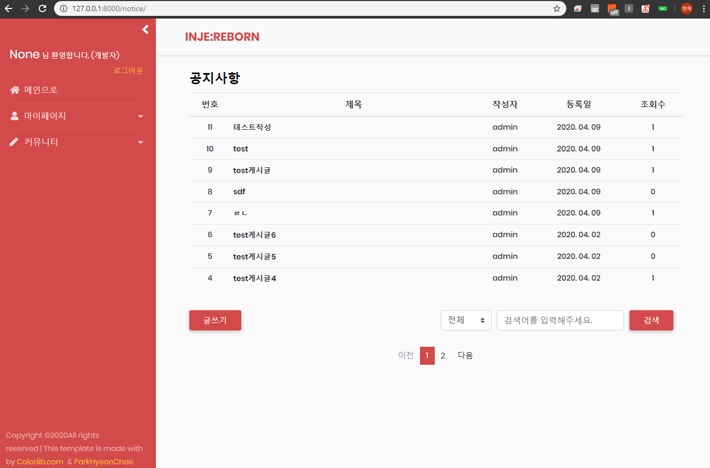

2020-04-09
Django 22. 게시글 상단에 표시하기 구현
공지사항이나 중요한 글을 게시글 리스트 상단에 추가로 표시할 수 있도록 구현합니다.
1. forms.py 수정
중요한 글을 상단에 고정시키기 위해 이전 16번 포스팅글에서 BooleanField로 생성한 top_fixed 필드를 활용합니다. 이 프로젝트의 상단고정 표시조건은 다음과 같습니다.
- 상단표시 체크를 하면 기존 리스트에 게시글을 표시하되, 상단에 추가로 같은 글을 고정시킨다.
- 페이지를 넘겨도 상단고정 게시글은 표시되게 한다.
- 게시글 검색을 했을시 검색결과만 표시되게 한다.
위 조건에 맞게 구현하기 위해 우선 글쓰기폼인 NoticeWriteForm의 Meta클래스에 top_fixed 필드를 추가합니다.
1 | # notice/forms.py |
2. 상단고정 체크박스 추가
이전에 생성해둔 글쓰기 템플릿인 notice_wirte.html에 아래와 같이 폼으로 넘어온 top_fixed를 적절한 위치에 추가합니다. 프로젝트에서는 작성하기 버튼 좌측에 위치하였습니다.
1 | <!-- templates/notice/notice_write.html --> |
3. ListView 수정
상단표시가 된 게시글을 글리스트에 출력하기 위해 이전에 구현한 NoticeListView를 수정합니다. get_context_data 함수에 아래의 소스를 추가합니다.
1 | # notice/views.py |
공지사항 게시판 모델인 Notice 모델에 필터를 걸어 top_fixed가 True인 게시글 쿼리셋을 가져온 후 context에 추가하여 템플릿에 전달합니다.
4. List 템플릿 수정
notice_list.html의 thead부분에 context로 넘어온 상단고정 게시글을 출력하기 위해 아래와 같이 소스를 추가합니다.
1 | <!-- templates/notice/notice_list.html --> |
사용자가 게시글을 검색할 시 상단고정 게시글은 표시되지 않게 하기 위해 조건문을 걸고, 상단고정임을 알리는 적절한 Style의 클래스를 추가합니다.
5. 결과

*전체 html, css 등은 자세하게 포스팅하지 않습니다. 제 Github에서 소스를 확인하실 수 있습니다.